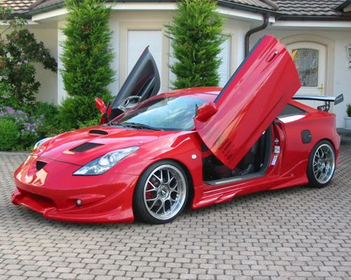
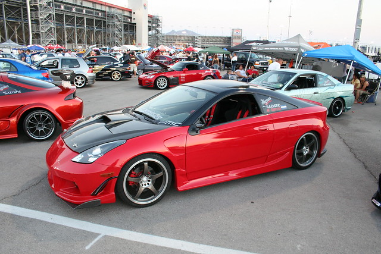

Premier Tuners
| Tuners |
Community |
Car Shows |


The Toyota celica made it debut in 1970's Developed by tokyo motors this car was a very reliable commuter car.
From 1970-1977 the First Geniration of celica were made as the Gt the sports version. This is the early 2000's
to 2007 model of the celica.
Upgrades
- Spoiler
- New Rims
- Butter Fly doors
- Front bumper
- Side skirt